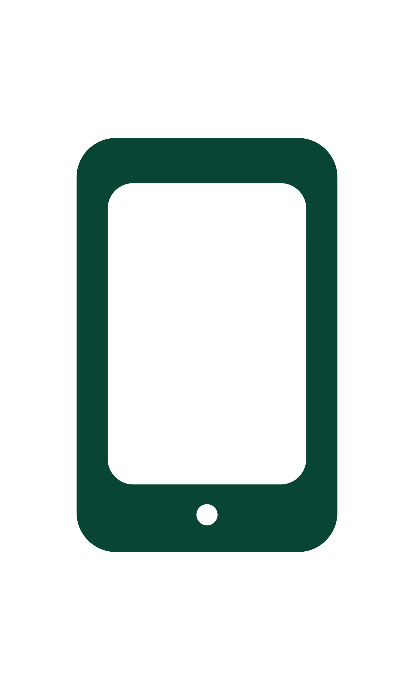

en
Polivoda Anastasia
+375 33 318 38 84
Поливода Анастасия
+375 33 318 38 84
Reading — B1
Listening — B1
Speaking — A2
Hi! My name is Anastasia, I am 21 years old and in a few months I will graduate from the university. I am optimistic and sociable, although sometimes my shyness gets in the way. I love to learn new things and can do laborious work, I appreciate the creative approach.
In my free time I like listening to music (I would say I'm a music lover), spending time with friends and family, watching TV series, drawing. This summer I worked in Adobe Illustrator for the first time and drew a couple of pictures, here you can see them (don't judge strictly).
Let me say a few words about why I want to do web development. Looking at all the laboratory work that we did at the University, I can say that the only work that brought me joy was related to web development. Even if it was difficult for me to do something, in the end I felt satisfied with the work done, so after University I would like to continue improve myself in this direction.
Чтение — B1
Аудирование — B1
Говорение — A2
Здравствуйте! Меня зовут Анастасия, мне 21 год, и через несколько месяцев я закончу университет. Я оптимистичная и общительная, хотя иногда слишком застенчивая. Люблю учиться новому и могу заниматься кропотливой работой, ценю творческий подход.
В свободное время я люблю слушать музыку (я бы сказала, что я меломан), проводить время с друзьями и семьей, смотреть сериалы, рисовать. Этим летом я впервые работала в Adobe Illustrator и нарисовала пару картинок, здесь вы можете их увидеть (не судите строго).
Стоит сказать пару слов о том, почему я хочу заниматься веб-разработкой. Глядя на все лабораторные работы, которые мы делали в университете, я могу сказать, что единственная работа, которая приносила мне радость, была связана с веб-разработкой. Даже если мне было трудно что-то сделать, в итоге я чувствовала удовлетворение от проделанной работы, поэтому после университета мне хотелось бы продолжать совершенствоваться в этом направлении.